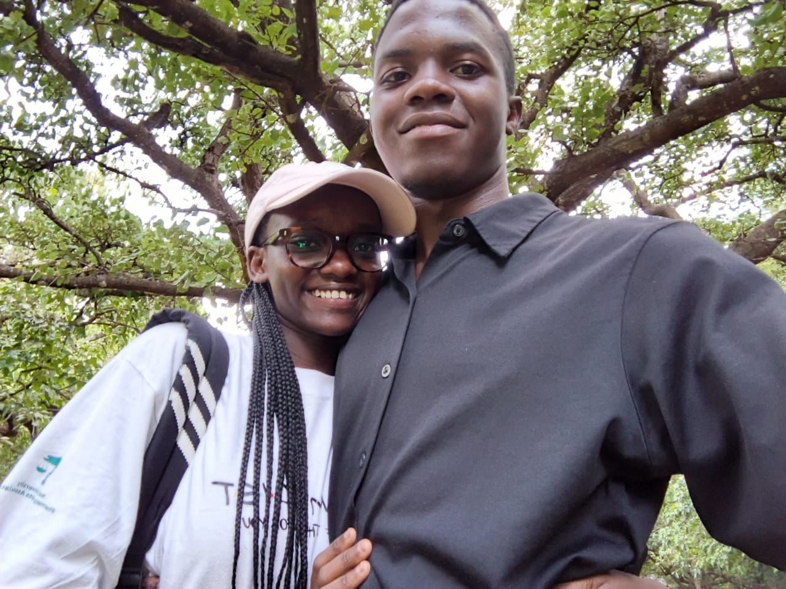

The D-Day
I had been away for six good months. This day was to be a memorable day. We had a lot to talk about, from tint to tint until all had been turned over and over. The excitement was palpable, and as we walked side by side, every moment felt like a treasure being unearthed. Our conversations flowed naturally, revisiting memories, sharing laughs, and planning for the future. The way the sun cast a golden hue on our surroundings made it feel like a scene from a movie. It was a day that would forever be etched in my heart, a reminder of how precious human connections are and how distance, no matter how vast, could never weaken the bond we had nurtured over time.
My Projects
After embarking from a long tour from my roots where I had spent the greater part of my time on a number of projects, I decided to lay them before her eyes the way they were. Raw at sight, without any touch. The projects were virgin and she would be the first person to explore them. With eager eyes, she examined each idea, each creation, and I could see the wonder and excitement forming in her expression. Her feedback was invaluable, her insights sharp, and with every word, I felt a surge of motivation to refine, improve, and bring them to life. These projects were more than just work; they were dreams, aspirations, and the very essence of my journey encapsulated in tangible form.